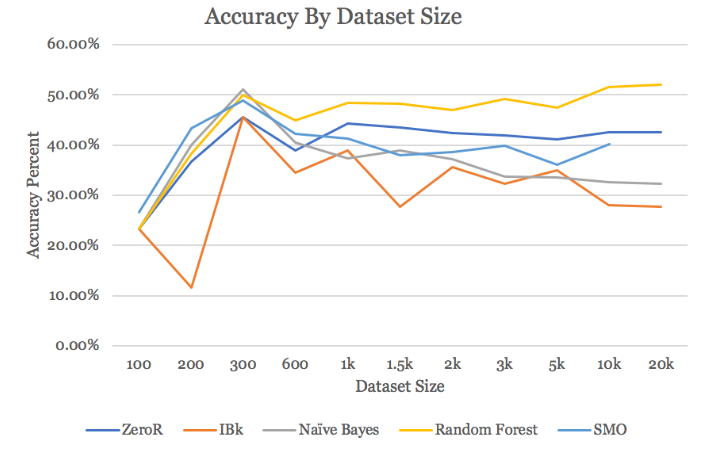

It is a common judgement on genres of music that their lyrics are all the same. But is that really the case? Given just lyrics to a song, would it be possible to train a model to identify which genre it belongs to? This task can be important for any sort of large database of lyrics, whether on a lyrics website or an online music store, to quickly identify the genre of song based on lyrics. This task could also be used for analyzing how similar genres actually are, based on how difficult it might be to classify songs only on their lyrics. This task is explored in "Classifying Genres".
performance of classifier methods on varying dataset sizes
A second task, perhaps more interesting, related to song genre and lyrics is to see the possibilities of generating lyrics based on a model trained on songs of the same genre. That is, can we synthesize lots of country song lyrics and create a model that gives us quintessential (or cliché) song lyrics? This task is explored in "Generating Song Lyrics".
This task turned out to be harder than expected; as stated above, we thought it would be pretty easy to classify a song into a genre purely based on lyrics, but this result shows us that the music plays a much more substantive part (and perhaps, the only part) in our determining of genre. Furthermore, in the task of creating lyrics, temperature was difficult to determine; it was hard to find a balance between chaos and too much repetition, as both can be seen in the results.
For the full paper click here to download